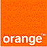
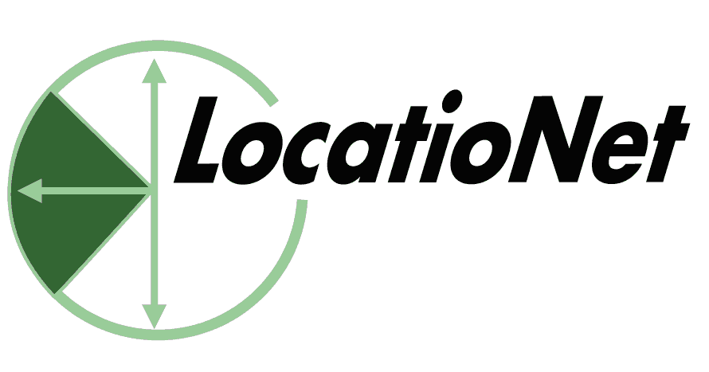

|
Some of our Clients

Degel developed the Series 60 version of Orange's
Talk Now Service on behalf of
Orange's Communications
Products Organization. Talk Now for Series 60 is an international
Push-to-Talk service currently available in the UK and France.
For Sun, Degel has ported the J2ME and graphics subsystem to
several handheld devices and optimized the graphics runtime.
Degel assisted Intel's wireless group in Israel to
evaluate the benefits and costs of porting a large Windows application
to wireless platforms.
ICQ runs the world's most popular instant messaging
(IM) system. Degel has produced the ICQ client for a large number of
wireless platforms, including J2ME and Symbian mobile phones.
Degel ported portions of the Quickoffice Quicksheet
application to Symbian Series 60. Quicksheet is an MS-Excel compatible
application that is included in the Quickoffice
Premier suite of office applications for mobile computing. Degel's
engineers also contributed to the effort to ensure that the entire
Quickoffice Premier suite for Series 60 was completed on time.
Degel ported iambic's award-winning Agendus Palm contact
manager to Symbian OS UIQ and created the variety of rich GUI features and
accelerators demanded by Agendus's loyal users. Our work for iambic earned
them a position as Handango 2004 Champion Finalist.
Nextcode's technology uses camera phones and custom 2D barcode symbols
enabling one-click access from printed materials to mobile Internet
content, commerce, or services. Degel is helping NextCode Corporation to
bring their innovative barcode scanning technology to a variety of mobile
platforms.

LocatioNet is a leader in the Location Based Services (LBS) market. Degel
assisted in the development of the user interface of the J2ME version of their MyMap application, a mapping
and geo-information guide specifically designed for today's mass market color
handsets.
MessageVine is an expert provider of messaging and presence-based
solutions to the communications industry. Degel has been working with
MessageVine on extending instant-messaging and presence clients to mobile
platforms
We created Natural Widgets' NaturalRecorder,
an exciting new Series 60 utility for automatically recording phone
conversations. NaturalRecorder has a unique, patent pending algorithm for
managing the recorded messages and ensuring that sufficient memory is available
for your phone's other applications.
Degel has helped MobiMate to port their #1 travel application, WorldMate
Professional Edition, to the Sony-Ericsson P800 and P900. Offering
up-to-date online flight schedules, online currency converter, weather,
international time information, and much more, WorldMate is the perfect
award-winning application for world travellers.
We wrote Symbian device drivers for VKB's virtual keyboard, enabling a
combined VKB/Siemens
demonstration to win critical acclaim at CeBIT 2004.
Degel ported Electric Pocket's popular BugMe!
application from Palm OS to Symbian OS. Degel not only
reimplemented the BugMe! code for the Symbian platform, we also
steered the design process to capture the spirit of the Palm
version and integrate the rich multimedia features of Nokia
Series 60 and the Sony-Ericsson P800.
BugMe! won Handango's 2003 Champion Award for best Symbian
Productivity Application, and is the subject of a Forum Nokia
case study.
Degel has helped Xcitel prototype and develop several exciting Symbian
OS applications.
Telmap is a leading software provider of real-time
mobile mapping applications. Degel extended Telmap's know-how on the
Symbian platform with research and development expertise.
Bamboo Multicasting has developed an innovative multicasting
platform. Degel is assisting them to take best advantage of undocumented
Symbian APIs to create compelling Series 60 clients that takes full
advantage of their technology.
Degel has helped Cash-U Mobile Technologies, a mobile entertainment
company, with a number of projects related to their wireless gaming
platforms, involving both technical research and product development.
OTM Technologies has invented novel optical technology to
measure 3d motion. They used Degel to write software drivers to couple
OTM's technology to the Nokia 9210 Communicator and other handheld
devices. We succeeded... even though both Nokia and popular opinion
declared that there was no way to write an add-in device driver for the 9210.
3DMe is an American/Israeli
startup that has developed innovative technology to convert real-time
speech into animated 3d displays of faces. Degel internet-enabled 3dMe's
initial application, helping its leadership to conduct a round of very
successful investor meetings and attract initial investors.
Degel wrote major portions of an OS/2 paint/draw program
for NTT, the "Ma Bell" of Japan.
Language Engineering Corp., is a Massachusetts
machine-translation software company. Degel ported their shrink-wrap
translation system from UNIX Motif to the English and Japanese versions
of Microsoft Windows.
Cognex is a Massachusetts machine vision firm. Degel
taught Cognex programmers advanced techniques for developing and
debugging applications under Microsoft Visual C++ and wrote several
mission-critical components and profiling tools.
HBOC Pegasus was a Jerusalem, Israel software company
later acquired by
McKesson Information Solutions. They developed an innovative Windows
application for the medical market. Degel designed and wrote major
portions of the application, guided in-house developers, and advised
management regarding the latest advances in Windows.
MBT is a Yehud, Israel company. Degel designed and
implemented a variety of Lisp Machine based applications, including an
innovative toolkit for image processing research.
2AM was an American/Israeli firm that developed a
sophisticated programming environment for massively distributed and
peer-to-peer Internet applications. Degel's team was responsible for most
of 2AM's software innovations.
Pacifitech was a Japanese software localization house later
acquired by Bowne Global Solutions. Degel designed
and prototyped a system for the semi-automatic localization of
shrink-wrapped third-party Windows applications.
|